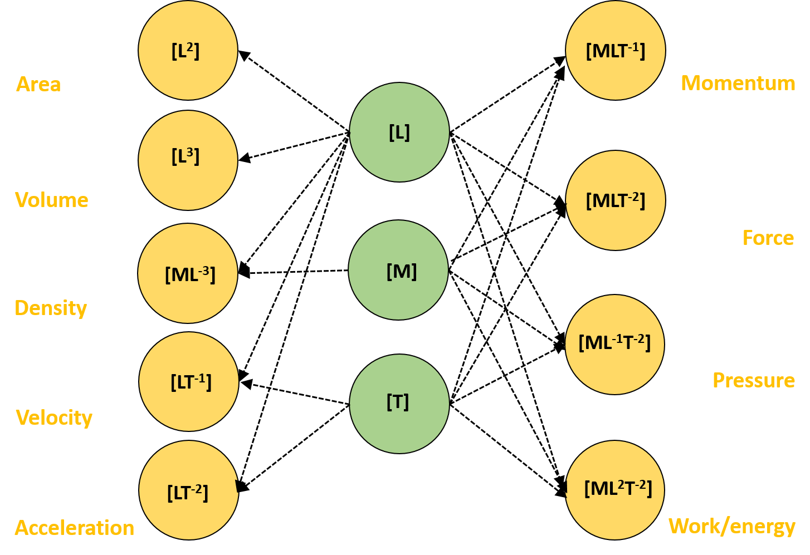

Food Physics I:
Quantity, Quality & Dimension
Dr Shane V Crowley
Press down for controls and right to progress
Interacting with the Slides
📺Full screen: press the F key
🎮View video controls: hover cursor over video
👩🎨 Draw: click icon or press C
🌈Pen colour: press X to cycle and Y to revert
💁 Options and Info: click icon or press M
To view the video just type this into your browser:
👉https://youtu.be/LZA3MPIw5NE

Click for print version (not recommended)👈
Why Food Physics???⚛️
- Foods are physical structures
- Processes are physical systems
- Physics is sufficient in many cases
Some Basic Concepts
Magnitude: the relative size of a quantity in a given unit
A quantity can be either extensive or intensive
Some Basic Concepts
Magnitude: the relative size of a quantity in a given unit
Quantity: a physical property that can be quantified
A quantity can be either extensive or intensive
Kinds of Quantity
- Extensive: length, mass, volume, energy
- Intensive: pressure, temperature, density
Often, foods are modelled as continua
or as dispersions, not as complex
bio-chemical systems
Productive difference
Differences in intensive properties in a system
Productive Difference
A gradient of intensity develops between the two magnitudes
Productive Difference
Over time the flow of matter/energy collapses the difference
Many operations in food processing exploit
productive differences in quantities
like pressure, temperature and concentration
When controlled this promotes
the flow of matter/energy in a desirable way

General Equation - Hover to Reveal
$$\color{violet}{Transfer \ Rate} = \color{red}{k} \frac{\color{orange}{Drive}}{\color{aqua}{Resistance}}$$
The constant of proportionality (k) is generally an empirical value related to the properties of the material under study
$$\color{violet}{Q} = \color{red}{k} \frac{\color{orange}{\Delta T}}{\color{aqua}{z}}$$
$$\color{violet}{J} = \color{red}{k} \frac{\color{orange}{\Delta P}}{\color{aqua}{z}}$$
$$\color{violet}{Q} = \color{red}{k} \frac{\color{orange}{\Delta T}}{\color{aqua}{z}}$$
$$\color{violet}{J} = \color{red}{k} \frac{\color{orange}{\Delta P}}{\color{aqua}{z}}$$
Food processes typically contain >>2 transfer processes
Dimensional Analysis
Each quantity ($q$) is a product of base quantities
$$\color{aqua}{q} = \color{orange}{L^{\alpha}} \color{violet}{M^{\beta}} \color{red}{T^{\gamma}}$$
Units 🎩
Units 🤔
- Pressure: $Pa$, $bar$, $psi$, $N/m^{-2}$, $kg/m/s^2$...
- Viscosity: $Pa.s$, $poise$, $dyne / s/cm^2$, $kg/m/s$...
- Energy: $Joule$, $Watt$, $barrel$, $calorie$...
What would your guess be as to why viscosity has the units of Pa.s? Do you really expect to remember all of the units that are used??
Units 😆
This can help!
General Points
- For any one quantity there are many units
- Some units are very intuitive (velocity)
- Other units are not intuitive (viscosity)
- A quantity can be understood without units
- I strongly recommend thinking dimensionally
⚠️Basic Algebra Rules Apply
$x^a.x^b = x^{a+b}$
$\frac{x^a}{x^b} = x^{a-b}$
${(x^a)}^b = x^{a.b}$
$x^0 = 1$
$\frac{1}{x} = x^{-1}$
$\frac{1}{x^2} = x^{-2}$
⚠️Basic Algebra Rules Apply
Example: you need to square a velocity
$[L][T^{-1}] . [L][T^{-1}]$
$[L^1].[L^1] = L^{1+1} = L^{2}$
$[T^{-1}].[T^{-1}] = T^{(-1)+(-1)} = T^{-2}$
$v^2 = [L^2][T^{-2}], \ or \ m^2s^{-2}$
$$\color{grey}{\color{aqua}{Re} = \frac{\color{orange}{\rho} \color{violet}{v} \color{red}{D}}{\color{green}{\mu}}}$$
$$\color{grey}{\color{aqua}{Re} = \frac{\color{orange}{[ML^{-3}]} \color{violet}{[LT^{-1}]} \color{red}{[L]}}{\color{green}{[ML^{-1}T^{-1}]}}}$$
An example of a dimensionless number
Exercise (optional/recommended)
Derive formulae for Momentum and Energy
Required: knowledge of fundamental equations
To find units: replace dimensions with $m$, $kg$ and $s$
Imagine you new this much: $E = m(something)$
How could you work out the rest???
Next lecture
Important Quantities in Food Processing
shane.crowley@ucc.ie